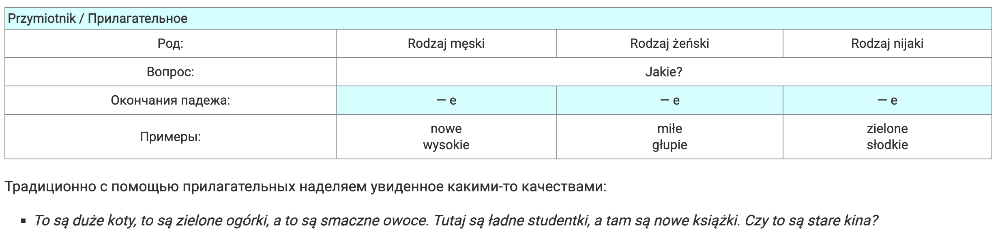

lekcja 9 - mianownik i biernik l.mn. rzeczowników niemęskoosobowych
(именительный и винительный падеж множественного числа личные существительные не мужского рода)
именительный и винительный падеж множественного числа

В именительном падеже есть много исключений, о некоторых из них (пока не написана отдельная статья об этом падеже) рекомендую вам почитать вот здесь: Склонение нерегулярных существительных в польском языке и здесь: существительные: исключения и особенности.
